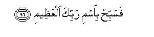

بسم الله الرحمن الرحيم
Sayyid Abul Ala Maududi - Tafhim al-Qur'an - The Meaning of the Qur'an
 56.
Surah Al Waqia (The Inevitable Event)
56.
Surah Al Waqia (The Inevitable Event)
The Surah takes its name from the word al-waqi`ah of the very first verse.
According to the chronological order that Hadrat Abdullah bin Abbas has given of the Surahs, first Surah Ta Ha was sent down, then Al-Waqi'ah and then Ash-Shu`ara'(Suyuti: Al-Itqan). The same sequence has been reported from Ikrimah (Baihaqi: Dala'il an Nubuwwat).
This is supported also by the story that Ibn Hisham has related from Ibn Ishaq about the affirmation of the Faith by Hadrat Umar (may Allah be pleased with him). It says that when Hadarat Umar entered his sister's house, Surah Ta Ha was being recited. Hearing his voice the people of the house hid the pages of the Qur'an. Hadrat Umar first seized his brother-in-law and then his sister rose in defense of her husband, he hit her also and wounded her on the head. When Umar saw blood on his sister, he was sorry for what he had done, and said to her: "Show me the manuscript that you have concealed so that I may see what it contains." The sister said: "You are unclean because of your polytheism: wa anna-hu la yamassu-ha ill-at-tahir: "Only a clean person can touch it." So, Hadrat Umar rose and washed himself, and then took up the manuscript to read it. This shows that Sarah Al-Waqi'ah had been sent down by that time for it contains the verse: La yamassu hu ill al mutahharun; and it had been established historically that Hadrat Umar embraced Islam after the first migration to Habash, in the fifth year of the Prophethood.
Its theme is the Hereafter, Tauhid and refutation of the Makkan disbelievers' suspicions about the Qur'an. What they regarded as utterly incredible was that Resurrection would ever take place, then the entire system of the earth and heavens would be upset, and when all the dead would be resurrected and called to account, after which the righteous would be admitted to Paradise and the wicked cast into Hell. They regarded all this as imaginary, which could not possibly happen in actual fact. In answer to this, it was said: "When the inevitable event will take place, there will be none to belie its happening, nor will anyone have the Power to avert it, nor prove it to, be an unreal happening. At that time all peoples will be divided into three classes: (1) The foremost in rank and position; (2) the common righteous people and (3) those who denied the Hereafter and persisted in disbelief and polytheism and major sins till the last." How these three classes of the people will be rewarded and punished has been described in detail in vv. 7-56.
Then, in vv. 57-74 arguments have been given, one after the other, to prove the truth of the two basic doctrines of Islam, which the disbelievers were refusing to accept, viz. the doctrines of Tauhid and the Hereafter. In these arguments, apart from every thing else that exists in the earth and heavens, man's attention has been drawn to his own body and to the food that he eats and to the water that he drinks and to the fire on which he cooks his food, and he has been invited to ponder the question : What right do you have to behave independently of, or serve any other than, the God Whose creative power has brought you into being, and Whose provisions sustain you And how can you entertain the idea that after having once brought you into existence He has become so helpless and powerless that He cannot recreate you once again even if he wills to?
Then, in vv. 75-82 their suspicions in respect of the Qur'an have been refuted and they have been made to realize how fortunate they are that instead of deriving any benefit from the great blessing that the Qur'an is, they are treating it with scant attention and have set only this share of theirs in it that they deny it. If one seriously considers this matchless argument that has been presented in two brief sentences about the truth of the Qur'an, one will find in it the same kind of firm and stable system as exists among the stars and planets of the Universe, and the same is the proof of the fact that its Author is the same Being Who has created the Universe. Then the disbelievers have been told that this Book is inscribed in that Writ of Destiny which is beyond the reach of the creatures, as if to say "You think it is brought down by the devils to Muhammad (peace and blessings of Allah be upon him), whereas none but the pure angels has any access to the means by which it reaches Muhammad (peace and blessings of Allah be upon him) from the well guarded Tablet."
In conclusion, man has been warned, as if to say: "You may brad and boast as you like and may shut your eyes to the truths in your arrogance of independence, but death is enough to open your eyes. At death you become helpless: you cannot save your own parents; you cannot save your children; you cannot save your religious guided and beloved leaders. They all die in front of your vary eyes while you look on helplessly. If there is no supreme power ruling over you, and your this assumption is correct that you are all in all in the world, and there is no God, then why don't you restore to the dying person his soul?Just as you are helpless in this, so it is also beyond your power to stop Allah from calling the people to account and mete out rewards and punishments to them. You may or may not believe it, but every dying person will surely see his own end after death. If he belongs to those nearest to God, he will see the good end meant for them if he be from among the righteous, he will see the end prepared for the righteous; and if he be from among the deniers of the truth, he will see the end destined for the criminals.
In the name of Allah, the Compassionate, the Merciful.
[1-16] When the inevitable event happens, there shall be none to belie its happening.1 It will be a calamity which will abase and exalt.2 The earth shall be shaken all of a sudden,3 and the mountains shall crumble and become as scattered dust. You, them, shall be divided into three classes.4 People of the right hand.5 Oh, how (fortunate) shall be the people of the right hand! And the people of the left hand.6 Oh, how ( unfortunate ) shall be the people of the left hand! And the foremost shall still be the foremost.7 They will be those nearest (to God). They shall abide in the Gardens of bliss. Most of them will be froth among the former people and a few from among those of latter day.8 They will he reclining on jeweled couches facing each other.

[17-26] Eternal youths9 shall go round them briskly with brimful goblets and beakers and cups of wine from a flowing spring, which will neither cause them giddiness nor affect their sense.10 And they shall present before them every kind of tasty fruit, whichever they may choose; and the flesh of fowls, whichever they may desire.11 And for them there shall be beautiful-eyed houris, as lovely as well-guarded pearls.12 All this they will receive in reward for what they had done in the world. There they shall neither hear vain talk nor sinful speech.13 Whatever they hear shall be right and pure.14


[27-40] And the people of the right hand. Oh, how fortunate will be the people of the right hand! They shall be among thornless lote-trees,15 and piled up bananas, one upon the other, and outspread shade and ever flowing waters and abundant fruits16 neither failing in supply nor forbidden, and in upraised couches. We shall create their wives anew and make them virgins,17 lovers of their husbands18 and of equal age.19 All this is for the people of the right hand. A good number of them will be from among the former people and a good number also from among those of latter day.


[41-56] And the people of the left hand. Oh, how unfortunate will be the people of the left hand! They will be in the scorching wind and the boiling waters and the shadow of black smoke, which will be neither cool nor refreshing. These will be the people who had lived in ease and comfort before meeting this fate. They persisted in heinous sin20 and used to say, "What, when we are dead and become dust and bones, shall we be raised up again? And our forefathers too, who have gone before?" Say to them, "Surely, the former and the latter, all shall be gathered together one day, the hour of which has already been appointed. Then, O deviators and deniers, you shall eat of the zaqqum-tree21 and fill your bellies with it, and drink on top of that boiling water like the thirsty camel. This shall be the entertainment of the people of the left hand on the Day of Recompense.
[57-62] We have created you.22 Then why don't you confirm?23 Have you ever considered the sperm drop that you emit? Is it you who create the child from it, or are We the Creators?24 We have distributed death among you,25 and We are not helpless that We may change your forms and create you in another form that you do not know.26 You already know well your first creation. Why then you do not take heed?27
[63-67] Have you ever considered the seeds that you sow ? Is it you who cause them to grow into crops, or do We?28 If We so pleased We could turn these crops into chaff, and you would then be left lamenting, "We have incurred penalties! Ah, we are undone!"
[68-70] Have you ever seen (with open eyes) the water that you drink? Is it you who cause it to rain from the clouds, or do We?29 If We so pleased We could make it salt.30 Then why don't you be grateful?31
[71-73] Have you ever considered the fire that you kindle? Is it you who have created its tree,32 or are We its Creator "We have made it a means of remembrance33 and a provision of life for the needy.34
[74] So, O Prophet, glorify the name of your Lord, the Supreme!35

[75-82] But nay!36 I swear by the positions of the stars-and it is a great oath, only if you knew it-that this is a glorious Qur'an,37 inscribed in a well-guarded Book,38 which none can touch but the purified.39 This has been sent down by the Lord of the worlds. Then, do you regard this discourse as unworthy of serious attention?40 And do you have in this blessing only this share that you deny it?41
[83-94] If you think you are subject to nobody, and you deem you are right in thinking so, then why don't you restore to the dying person his soul when it has come up to the throat and you are helplessly watching that he is at the point of death? At that time We are closer to him than you, but you do not see Us. Then, if the dying person be of those nearest to Us, for him there is comfort and good provision and the blissful Garden. And if he be of the people of the right hand, he is greeted with "Peace be to you: You are of the people of the right!" And if he be of the deniers, gone astray, his entertainment is of boiling water and burning in Hell.

[95-96] All this is absolute truth. So, O Prophet, glorify the name of your Lord, the Supreme!42
1Opening the discourse with this sentence by itself signifies that this is an answer to the objections that were than being raised in the disbelievers conferences against Resurrection. This was the time when the people of Makkah had just begun to hear the invitation to Islam from the Holy Prophet Muhammad (upon be Allah's peace and blessing). In it what seemed most astonishing and remote from reason to them was that the entire system of the earth and heavens would one day be overturned and then another world would be set up in which all the dead, of the former and the latter generations, would be resurrected. Bewildered they would ask: `This is just impossible ! Where will this earth, these oceans, these mountains, this moon and sun go? How will the centuries-old dead bodies rise up to life ? How can one in his senses believe that there will be another life after death and there will be gardens of Paradise and the fire of Hell ?" Such were the misgivings that were being expressed at that time everywhere in Makkah. It was against this background that it was said: "When the inevitable event happens, there shall be no one to belie it. "
In this verse the word "wagi ah " (event) has been used for Resurrection, which nearly means the same thing as the English word 'inevitable', signifying thereby that it is something that must come to pass. Then, its happening has been described by the word "waqi ah, " which is used for the sudden occurrence of a disaster. Laisa li-waq'at-i-ha kadhibat-un can have two meanings:
(1) That it will not be possible that its occurrence be averted, or stopped, or turned back; or, in other words, there will be no power to make it appear as an unreal event; and
(2) that there will be no living being to tell the lie that the event has not taken place.
2Literally: "that which causes (something or somebody j to rise and to Fall. " Its one meaning can be that it will upset every order: it will turn things up-side-down. Another meaning also can be that it will exalt the lowly and bring low the high and mighty; that is, on its advent the decision as to who is noble and who is ignoble among the people will be made on quite a different basis. Those who posed as honorable people in the world, would become contemptible and those who were considered contemptible would become honorable.
3That is, it will not be a local earthquake that may occur in a restricted area, but it will shake the whole earth to its depths all of a sudden, and it will experience a tremendous jolt and tremors all through.
4Although the address apparently is directed to the people to whom this discourse was being recited, or who may read it or hear it read now, in fact the entire mankind is its addressee. All human beings who have been born since the first day of creation and will be born till the Day of Resurrection, will ultimately he divided into three classes.
5The word maintanah in ashab al-maimanah, in the original, stay have been derived from Yamin, which means the right hand, and also from yumn, which means good omen. If it is taken to be derived from yamin, ashab almaimanah would mean: `those of the right hand." This, however, does not imply its lexical meaning, but it signifies the people of exalted rank and position. The Arabs regarded the right hand as a symbol of strength and eminence and honor, and therefore would seat a person whom they wished to do honor, on the right hand, in the assemblies. And if it is taken as derived from yumn, ashab almaimanah would mean fortunate and blessed people.
6The word mash 'amah in ashab al-mash'amah, in the original, is from shu'm which means misfortune, ill-luck and bad omen; in Arabic the left hand also is called shuma. The Arabs regarded shimal (the left hand) and shu'm (bad omen) as synonyms, the left hand being a symbol of weakness and indignity. If a bird flew left on the commencement of a journey, they would take it as a bad omen; if they made a person sit on their left, it meant they regarded him as a weak man. Therefore, ashab al-mash'amah implies ill-omened people, or those who would suffer disgrace and ignominy, and would be made to stand on the left side in the Court of Allah.
7Sabiqin (the Foremost) implies the people who excelled others in virtue and love of the truth and in good works and responded to the call of Allah and His Messenger before others. They were also in the forefront in their response to the call for Jihad, for expending their wealth for the sake of the needy and for public services, or for inviting others to virtue and truth, in short, for spreading the good and wiping out evil and making sacrifices and exerting themselves whenever there was need for it. On this very basis, in the Hereafter too, they will be placed in the forefront.
Thus, mankind, so to say, will be ranged in Allah's Court like this: On the right hand, there will be the righteous, on the left the wicked, and in the forefront (nearest in Divine Presence) the Sabiqin (the Foremost in Faith and good deeds). According to a Hadith reported by ,Hadrat `A'ishah the Holy Prophet (upon whom be Allah's peace) asked the people: "Do you know who, on the Day of Resurrection, will he the first to be accommodated under the Divine Shade ?" The people said Allah and His Messenger only had the best knowledge. Thereupon the Holy Prophet replied: "Those who were such that when the Truth was presented before them, they accepted it forthwith; when a right was asked of them, they discharged it gracefully; and their decision in respect of others was the same as in respect of their own selves." (Musnad Ahmad).
8The commentators have differed as to who are implied by the former And the latter people '`
One group of them has expressed the view that the "former people" were the communities that passed away since the time of the Prophet Adam (peace be upon him) till the time of the Prophet Muhammad (upon whom be Allah's peace and blessings), and the ¦people of the latter day" those who will have lived in the world since the advent of the Holy Prophet till the Day of Resurrection. Accordingly the verse would mean: "The number of the Sabqin (the Foremost in Faith and good deeds) among the people who passed away during the thousands of years before the advent of the Prophet Muhammad (upon whom be Allah's peace and blessings) would be greater, and the number of those who would attain to the rank of the Sabiqin among those people who have been born since the advent of the Holy Prophet, or will be born till the Day of Resurrection, will be less. "
The second group says that the former and the latter in this verse imply the former and the latter people of the Holy Prophet's own Ummah itself. That is, in his Ummah the people belonging to the earliest period were the former among whom the number of the Sabiqin will be greater, and the people of the later periods are the latter among whom the number of the Sabiqin will be smaller.
The third group holds the view that this- implies the former and the latter people of every Prophet's own Ummah. That is, there will be numerous Sabiqin among the earliest followers of every Prophet, but among his later followers their number will decrease. The words of the verse bear all the three meanings, and possibly all three ate implied, for there is no contradiction between them. Besides, they give another meaning also and that too is cornet: every early period of a Prophet's following the proportion of the Sabiqin in human population would be greater and in the later period less, for the number of the workers of good and right does not increase at the rate of increase of the human populations. They may be more numerous as against the Sabiqin of the earliest period. but on the whole their number as against the world population goes on becoming less and less.
9This implies boys who will ever remain boys and stay young. Hadrat 'AIi and Hadrat Hasan Basri say that these will be those children of the people, who died before reaching their maturity; therefore, they will neither have any good works to their credit for which they may be rewarded, nor any evil deeds for which they may be punished, But obviously, this could imply those people who would not deserve Paradise. For, as for the true believers, about them Allah has guaranteed in the Qur'an that their children will be joined with them in Paradise (At-Tur: 21). This is also supported by the Hadith, which Abu Da'ud Tayalisi, Tabarani and Bazzar have related on the authority of Hadrat Anas and Hadrat Samurah bin Jundub, according to which the Holy Prophet (upon whom be Allah's peace) said that the children of the polytheists will be attendants of the people of Paradise. (For further explanation, see E.N. 26 of As-Saaffat, E.N. 19 of At-tur).
10For explanation, see E. N . 27 of As-Saaffat, E. N . 22 of Surah Muhammad, E. N. 18 of At-Tur.
11For explanation, see E.N. 17 of Surah At-tur.
12For explanation, see E.N.'s 28, 29 of As-Saaffat, E.N. 42, of AdDukhan, E. N . 61 of Ar-Rahman.
13This is one of the major blessings of Paradise, which has been mentioned at several places in the Qur'an, viz. that in Paradise human ears will remain secure against idle and frivolous talk, lying, backbiting slander, invective, boasting and bragging, taunts and mockery, satire and sarcasm. It will not be a society of foul-mouthed, indecent people who will throw mud at each other, but a society of noble and civilized people free of such frivolities. A person who has been blessed with some decency of manner and sense by Allah can very well feel what an agony it is in worldly life a hope of deliverance from which has been given to man in Paradise.
14Some commentators and translators have taken the words, illa gilan salam-an salama, to mean that in Paradise one will hear only the greeting of 'Peace, peace' on every side; the correct view, however, is that it implies healthy and wholesome speech, i.e. such speech as may be free of the vices and blemishes, faults and evils, that have been mentioned in the preceding sentence. Here the word salam has been used nearly in the same sense as the English word sane.
15That is, lote-trees without thorns on them. This will be a superior kind of the lote-tree to be only found in Paradise, and its fruit likewise will be much superior to that found in the world.
16The word !a maqtu ah of the Text means: This fruit will neither be seasonal that its supply may fail when the season is over, nor its production will cease as it happens in a garden after its fruits has been picked. But in Paradise every kind of fruit will remain available in abundance in every season and will continue to be produced and supplied no matter how much of it is consumed. And la mamnu'ah means that there will be no prohibition or hindrance in obtaining fruit as it is in the gardens of the world, nor will it be out of reach because of thorns or height.
17This signifies the virtuous women of the world, who will enter Paradise on the basis of their faith and good works. Allah will make them young no matter how aged they might have died in the world; will make them beautiful whether or not they were beautiful in the world; and will make them virgins whether they died virgins in the world or after bearing children. If their husbands also entered Paradise with them, they would be joined with them, otherwise Allah will wed them to another dweller in Paradise. This very explanation of this verse has been reported from the Holy Prophet (upon whom be peace) in several Ahadith. According to Shama il Tirmidhi, an old woman requested the Holy Prophet to pray for her admission to Paradise. The Holy Prophet replied: "No old woman will enter Paradise." Hearing this the woman went back crying. Thereupon the Holy Prophet said to the people: "Tell her that she will not enter Paradise as an old woman, for Allah says: `We shall create them anew and make them virgins'." Ibn Abi Hatim has related, on the authority of Hadrat Salamah bin Yazid, that he heard the Holy Prophet ( upon whom be peace) explain this verse, thus: "This implies the women of the world; whether they died virgins or married." Tabarani contains a lengthy tradition related from Hadrat Umm Salamah according to which she asked the Holy Prophet the meaning of the several references in the Qur'an to the women of Paradise. In answer, he explained this very verse and said: "These are the women who died as aged and decayed women, with sticky eyes and gray hair; alter this old age Allah will again make them young and virgins." Hadrat Umm Salamah asked: "If a woman had several husbands in the world, one after the other, to whom will she belong in Paradise ?'' The Holy Prophet replied "She will he asked to make her own choice, and she will choose the one who had the best moral character. She will say: O my Lord, make me his wife, for he was the best in his conduct and dealings with me. O Umm Salamah, good moral conduct has carried off all the good of this world and the Hereafter." (For further explanation, see E.N. 51 of Surah Ar-Rahman).
18The word 'uruban is used for the best feminine qualities of the woman in Arabic. This signifies a woman who is graceful and elegant, well-mannered and eloquent, and brimful of feminine feelings, who loves her husband with all her heart, and whose husband also loves her with all his heart.
19This can have two meanings:
(1) That they will be of equal age with their husbands; and
(2) that they will be of equal age among themselves; i.e. all the women in Paradise will be of the same age and will eternally stay young.
Both these meanings may be correct at one and the same time, i.e. these women may be of equal age among themselves and their husbands also may be made of equal age with them. .According to a ,Hadith, "When the dwellers of Paradise enter it, their bodies will be without hair, their mustaches will be just appearing, but will yet he beardless, they will be handsome and fair-complexioned, with sturdy bodies and collyrium- stained eyes; they will all be 33 years of age." (Musnad Ahmad: Marwiyat Abi Hurairah). Almost the same theme has been related in Tirmidhi by Hadrat Mu'adh bin Jabal and Hadrat Abu Sa`id Khudri also.
20That is, "Their prosperity had an adverse effect on them. Instead of being grateful to Allah Almighty, they had become deniers of His blessings. Lost in pleasure-seeking they had forgotten God and persisted in heinous sinning. "Heinous sinning" includes disbelief, polytheism and atheism as well as every grave sin of morality and conduct."
21For the explanation of zaqqum, sec E.N. 34 of As-Saaffat.
22The arguments from here to verse 74 provide the reasoning to prove both the doctrines of `Tauhid and of Hereafter rationally. For it was there two basic doctrines of the Holy Prophet's teaching that the people of Makkah were debating and objecting to at that time.
23That is, "Why don't you confine that We alone are your Lord and God and We have the power to create you once again?"
24In this brief sentence a very important question has been put before man. Apart from all other things in the world, if man only considers as to how he himself has come into being, he can then neither have any doubts left about the doctrine of Tauhid presented by the Qur'an nor about its doctrine of the Hereafter. The process of man's own creation starts when the male has conveyed his sperm to the womb of the female. But the question is: Has the sperm by itself become endowed with the capability of producing a child, and necessarily a human child ? Or, has it been created by man himself, or, by another than God? And, is it in the power of the man, or of the woman, or of another agency in the world, to cause conception by this sperm? Then, who is responsible for the gradual formation and development of the fetus in the mother's womb, its shaping and molding into a unique child, the provision in a particular proportion of different mental and physical powers and qualities in each child, so that it develops into a unique person, except One God? Has another than God any role to play in this? Is it done by the parents themselves? Or, by a doctor? Or, by the prophets of saints, who were themselves created in this very way? Or, by the sun and the moon and the stars, which arc themselves subject to a law? Or, by nature, which is devoid of any knowledge, wisdom, will and authority? Then, is it also in the power of another than God to decide whether the child is to be a boy or a girl? Whether it is to be beautiful or ugly, strong or weak, blind and deaf and a cripple or sound bodied, intelligent or stupid? Then, is it another than God who decides as to people of what caliber, good or and are to be created in a particular nation at a particular time, who would cause its rise or fall? If a person is not obdurate and stubborn, he will himself realize that no rational answer can be given to these questions on the basis of polytheism and atheism. Their rational answer is only one and it is this Man is wholly and entirely the creation of God; and when the truth is this, what right has this man, the creation of God, to claim freedom and independence as against his Creator, or serve another beside Him?
As it is for Tauhid, so it is with regard to the Hereafter too. Man is created from a germ which cannot be seen without a powerful microscope. This gene combines in the darkness of the mother's body with the ovum (female germ) which is like itself an insignificant microscopic germ. Then by their combination a tiny living cell comes into being, which is the starting-point of human life. This cell also is too small to be seen without a microscope. Allah develops this insignificant cell in the mother's womb for nine months or so into a living human, and when its development and formation becomes complete, the mother's body itself pushes it out to raise a storm in the world. All human beings have been born into the world in this very way and are witnessing day and night this phenomenon of the birth of human beings like themselves. After this, only a foolish person could assert that the God Who is creating human beings in this way today would not be able to create the human beings created by Himself in some other way tomorrow.
25That is, "Like yow birth yow death too, is under Our control. We decide as to who is to die in the mother's womb itself, who is to die soon after birth, and who is to die at a later stage. No power in the world can cause death to a person before the time appointed for his death by Us, nor can keep him alive after it even for a moment. The dying ones die in big hospitals even before the eyes of eminent doctors; and the doctors themselves also die at their appointed time. Never bas anyone been able to know the time of death in advance, nor has anyone been able to avert the approaching death, nor to find out as to how and where and by what means will a certain person die."
26That is, "Just as We were not powerless to create you in your present form and appearance, so also We are not powerless to change the method of your creation and bring you into being in another form and shape with another set of qualities and characteristics. Today the method We have adopted for your creation is that conception takes place by your sperm then you arc gradually form and developed in your mother's womb, and then you are brought out as a child. This method of creation also has been devised by Us. But this is not the only method apart from which We may not he knowing, or may not be able to adopt, any other method. On the Day of Resurrection We can create you in the form of the man of the same age at which you died. Today We have set one particular measure for your sight and hearing and other faculties. But this is not the only measure that We have for man, which We may not have the power to change. On the Day of Resurrection We shall change it absolutely; so much so that you will be able to see and hear things which you cannot see and cannot hear here. Today your skin and your limbs and your eyes do not possess the power of speech. But, it is We Who have given the tongue the power of speech; so We are not powerless to cause your every limb and every part of the skin of yow body to speak by Our command on the Day of Resurrection. Today you live up to a certain age and then die. Your this living and dying also is controlled by a law ordained by Us. Tomorrow We can make another law to control yow life under which you may never die. Today you can endure punishment only to a certain extent: you cannot survive if the punishment is increased beyond it. This rule also has been made by Us. Tomorrow We can make another rule for you Under which you will be able to suffer much severer punishments endlessly, and death would not come to you even if you were given the severest torment. Today you cannot imagine that an old man could return to youth, that he could never become ill, that a young man could never be old, and, that he could stay young for ever and ever. But youth here changes into old age according to the biological laws made by Us. Tomorrow We can make some other laws for your life under which every old man may become young as soon as he entered Paradise and stay young and healthy eternally.
27That is, "You already know how you were created in the first instance, how the sperm was transferred from the loins of the father by which you came into being, how you were nourished in the mother's womb, which was no less dark than the grave, and formed into a living human being, how an insignificant speak was developed and endowed with the heart and brain, eyes and ears, and hands and feet, and how it was blessed with the wonderful faculties of intellect and sense, knowledge and wisdom, workmanship and inventiveness, etc. Is this miracle in any way less wonderful than raising the dead back to life ? And when you are witnessing this wonderful miracle with your own eyes and are yourselves a living evidence of it in the world, why don't you then learn the lesson that the same God Who by His power is causing this miracle to take place day and night, can also cause the miracle of life after death, Resurrection and Hell and Heaven to take place by the same power?"
28The above question drew the people's attention to the truth that they have been developed and nourished by Allah Almighty and have come into being by His act of creation. Now this second question draws their attention to this important truth that the provisions which sustain them, are also created only by Allah for them, as if to say: "Just as in your own creation human effort has nothing more to do than that your father may cast the sperm in your mother, so in the supply of the provisions for you also human effort has nothing more to do than that the farmer should sow the seed in the soil. The land in which cultivation is done, was not made by you. The power of growth to the soil was not granted by you. The substances in it that become the means of your food are not provided by you. The seed that you sow is not made capable for growth by you. The capability in every seed that from it should sprout up the tree of the same species of whose seed it is, has not been created by you. The process for changing this cultivation into blooming crops that is working under the soil and of arranging the required kind of weather and air and water above it does not owe anything in any way to your planning and skill. All this is the manifestation of Allah's power and providence. Then, when you have come into being only by His act of creation and are being sustained by His provision, how can you then have the right to pose yourself as independent of Him, or save another than Him as your deity?
Although apparently this verse reasons out Tauhid, yet if one considers its theme a little more deeply, one finds in it the argument for the Hereafter, too. The seed that is sown in the soil is by itself dead, but when the farmer buries it under the soil, Allah infuses it with plant life, which puts out sprouts and blooms into spring. Thus, these countless bodies are rising from the dead in front of our eyes daily. Is this miracle in any way loss wonderful so that a person may regard the other wonderful miracle of the life hereafter, which is being foretold by the Qur'an, as impossible?
29That is, "We have not only made arrangements of satisfying your hunger, but also of satisfying your thirst, This water that is even more essential for your life than bread has been arranged by Us, not by you The seas in the earth have been created by Us. It is the heat of Our sun that causes their water to evaporate, and it is Our winds that cause the vapors to rise. Then it is by Our power and wisdom that the vapors collect and form into clouds. Then, by Our command the clouds divide in a particular proportion and spread over different regions of the earth so that the share of the water appointed for a particular region, should reach it. And in the upper atmosphere also We bring about the cool that causes the vapors to change back into water We have not only brought you into being but are also busy making all these arrangements for your sustenance without which you could not survive at all. Then, when the fact is that you have come into being by Our act of creation, arc eating Our provisions and drinking Our water, where from have you got the right that you should pose to be independent of Us and serve another beside Us?"
30In this sentence an important manifestation of Allah's power and wisdom has been pointed out. Among the wonderful properties that Allah has created in water one property also is that no matter what different substances are dissolved in water, when it changes into vapor under the effect of heat, it leaves behind all adulterations and evaporates only with its original and actual component elements. Had it not possessed this property the dissolved substances also would have evaporated along with the water vapors. In this case the vapors that arise from the oceans would have contained the sea salt, which would have made the soil saline and uncultivable wherever it rained. Then, neither could man have survived by drinking that water, nor could it help grow any vegetation. Now, can a man possessed of any common sense claim that this wise property in water has come about by itself under some blind and deaf law of nature? This characteristic by virtue of which sweet, pure water is distilled from saltish seas and falls as rain, and then serves as a source of water-supply and irrigation in the form of rivers, canals, springs and wells, provides a clear proof of the fact that the Providence has endowed water with this property thoughtfully and deliberately for the purpose that it may become a means of sustenance for His creatures. The creatures that could be sustained by salt water were created by Him in the sea and there they flourish and multiply. But the creatures that He created on the land and in the air, stood in need of sweet water for their sustenance and before making arrangement of the rainfall for its supply He created this property in water that at evaporation it should rise clear and free of everything dissolved in it.
31In other words, "Why do you commit this ingratitude in that some of you regard the rainfall as a favor of the gods, and some others think that the rising of the clouds from the sea and their raining as water is a natural cycle that is working by itself, and still others, while acknowledging it as a mercy and blessing of God, do not admit that God has any such right on them that they should bow to Him alone? How is it that while you derive so much benefit from this great blessing of Allah, in return you commit sins of disbelief and polytheism and disobedience of Him?"
32The tree here either implies the tree that supplies wood for lighting a fire, or the trees of markh and 'afar, green sticks of which were struck one against the other to produce sparks in ancient Arabia.
33Making the fire "a means of remembrance" means; "The fire by virtue of its quality of being kindled at, all times reminds man of his forgotten lesson that without it human life could not be any different from animal life. Because of the fire only did man learn to cook food for eating instead of eating it raw like the animals, and then new and ever new avenues to industry and invention went on opening up before him. Obviously, if God had not created the means of kindling the fire and the substances that could be kindled, man's inventive potentialities would have remained dormant. But the man has forgotten that his Creator is a wise Sustainer, Who created him with human capabilities on the one hand, and on the other, created such materials on the earth by which his these capabilities could become active and operative. If he is not lost in Heedlessness, the fire alone is enough to remind him of the favors and bounties of his Creator, which he is so freely enjoying in the world."
34The word muqwin in the original has been interpreted differently by the lexicographers. Some have taken it in the meaning of the travelers who have halted in the desert, some in the meaning of a hungry man, and some take it in the meaning of all those who derive benefit from the fire, whether it is the benefit of cooking food or of light or of heat.
35That is, "Mention His blessed name and proclaim that He is free from and far above the defects and faults and weaknesses that the pagans and polytheists ascribe to Him, and which underlie every creed of disbelief and every argument that is presented by the deniers of the Hereafter. "
36That is, "The truth is not what you seem to think it is." Here, the use of the word la (nay) before swearing an oath by the Qur'an's being Allah's Revelation by itself shows that the oath has been sworn to refute certain objections that the disbelievers wen raising with regard to the Qur'an.
37"The positions of the stars" : the positions and phases and orbits of the stars and planets. The oath implies that just as the system of the celestial bodies is firm and stable, so also is this Divine Word firm and stable. The same God Who has coated that system has also sent down this Word. Just as there exists perfect. consistency and harmony among the countless stars and planets found in the countless galaxies of the Universe, whereas apparently they seem to be scattered, so also this Book presents a perfectly consistent, and systematic code of life in which detailed guidance has been given, on the basis of belief, about morals, modes of worship, civilization and culture, economic and social life, law and justice, peace and war, in short, about every aspect of human life, and there is nothing out of harmony with the other, whereas this system of thought has been expressed in scattered verses and discourses given on different occasions. Then, just as the system of the heavens set and planned by God is stable and unalterable, and does not ever admit of the slightest variation, so also are the truths and instructions given , in this Book stable and unalterable: no part of these can be changed or displaced in any way.
38This implies the well-guarded Tablet (leuh-mahfuz). For it the word Kitab maknun has been used, which means a writing kept hidden, i.e. a writing that is inaccessible to all. The Qur'an's having been inscribed in this well guarded Book means that before its being sent down to the Holy Prophet (upon whom be Allah's peace) it lay inscribed in the Divine Writ of Destiny in which three is no possibility of any alteration or corruption taking place, for it is inaccessible to every kind of creation. The Meaning of the Qur'an.
39This is a refutation of the accusation that the disbelievers used to loud against the Qur'an. They regarded the Holy Prophet as a sorcerer and asserted that he was being inspired with the Word by the jinn and satans. An answer to it has been given at several places in the Qur'an, e.g. in Surah Ash-Shu'ara', where it has been said: "This (lucid Book) has not beer brought down by satans, nor does this work behoove them, nor arc they able to do it. They have indeed been kept out of its hearing." (vv. 210-212). The same theme has been expressed here, Saying: 'None but the purified can touch it." That is to say "Not to speak of its being brought down by the satans, or its being tampered within any way when it is being revealed, none but the pure angels can come anywhere near it when it is being revealed from the well-guarded Tablet (Lauh-mahfuz; : to the Prophet. " The word mutahharin has been used for the angels in the sense that Allah has kept them free of every kind of impure feeling and desire. This same commentary of this verse has been given by Anas bin Malik, Ibn 'Abbas, Sa'id bin Jubair, 'Ikrimah, Mujahid, Qatadah, Abul 'Aliyah, Suddi, Dahhak and Ibn Zaid, and the same also fits in with the context. For the context itself shows that after refuting the false concepts of the Makkan disbelievers about Tauhid and the Hereafter, now their false accusations against the Qur'an are being answered, and by swearing an oath by the positions of the stars, it is being stated that the Qur'an is an exalted Book, which is inscribed in the well-guarded Divine Writ, in which there is no possibility of any interference by any creation, and it is revealed to the Prophet in such a safe way that none but the pure angels can touch it.
Some commentators have taken la in this verse in the sense of prohibition, and have interpreted the verse to mean: "None who is unclean should touch it. " Although some other commentators take la in the sense of negation and interpret the verse to mean: "None but the clean and pure touch this Book," they express the opinion that this negation is a prohibition in the same way as the Holy Prophet's saying is a prohibition: "A Muslim is a brother of a Muslim: he does not treat him unjustly." Although in it, it has been said that a Muslim does not treat the other Muslim unjustly, you it enjoins that a Muslim is not to treat the other Muslim unjustly. Likewise, although in this verse it has been state that none but the clean and pure angels touch this Book, yet it enjoins that unless a person is purified, he should not touch it.
The fact, however, is that this commentary does not conform to the context of the verse. Independent of the context, one may take this meaning from its words, but if considered in the context in which the verse occurs, one does not sec any ground for saying that "None is to touch this Book except the clean and purified people. " For the addressees here are the disbelievers and they arc being told, as if to say: `This Book has been sent down by Allah Lord of the worlds. Therefore, your suspicion that the satans inspire the Prophet with it, is wrong. " What could be the occasion here to enunciate the Shari'ah injunction that no one should touch it without purification? The most that one could say in this regard is that although this verse has not been sent down to enjoin this command, yet the context points out that just as only the purified (mutahharin) can touch this Book in the presence of Allah, so in the world also the people who at least believe in its being Divine Word should avoid touching it in the impure and unclean state.
The following are the traditions that bear upon this subject:
(1) Imam Malik has related in Mu' atta this tradition on the authority of 'Abdullah bin Abi Bakr Muhammad bin 'Amr bin Hazm: "The written instructions that the Holy Prophet (upon whom be peace) had sent to the Yarnanite chiefs by the hand of 'Amr bin Hazm contained this instruction also: La yamass-ul Qur an a illa tahir-un. No one should touch the Qur'an except the pure one." This same thing has been related by Abu Da'ud from Imam Zuhri in the Traditions which are immediately traced to the Holy Prophet (marasil), saying that the writing that he had seen with Abu Bakr Muhammad bin 'Amr bin Hazm contained this instruction as well.
(2) The traditions from Hadrat 'Ali in which he says: 'Nothing prevented the Holy Prophet of Allah from reciting the Qur'an but the state of uncleanness due to sexual intercourse." (Abu Da'ud, Nasa'i, Tirmidhi).
(3) The tradition of Ibn 'Umar in which he states: "The Holy Messenger of Allah said: The menstruating woman and the one who is unclean on account of sexual intercourse should not read any portion of the Qur'an. " (Abu Da'ud. Tirmidhi).
(4) The tradition of Bukhari in which it has been said that the letter which the Holy Prophet (upon whom be peace) sent to Heraclius, the Roman emperor, also contained this verse of the Qur'an: Ya ahl al-Kitab-i to 'alau ila kalimat-in sawaa'un bainana wa baina-kum .. .
The views that have been related from the Holy Prophet's Companions and their immediate followers are as follows:
Salman, the Persian, saw no harm in reading the Qur'an without the ablutions, but even according to him touching the Qur'an with the hand in this state was not permissible. The same also was the view of Hadrat Sa`d bin Abi Waqqas and Hadrat 'Abdullah bin 'Umar. And Hadrat Hasan Basri and Ibrahim Nakha'i also regarded touching the Qur'an with the hand without the ablutions as disapproved, (AI-Jassas, Ahkam al-Qur an)). The same has been reported from 'Ata', Ta'us, Sha'bi and Qasim bin Muhammad also. (Ibn Qudamah, Al-Mughni). However, according to all of them, reading the Qur'an without touching it with the hand, or reciting it from memory, was permissible even without the ablutions.
Hadrat 'Umar, Hadrat 'Ali, Hadrat Hasan Basri. Hadrat Ibrahim Nakha'i and Imam Zuhri regarded reading the Qur'an in the state of uncleanness due to sexual intercourse and menstruation and bleeding after childbirth as disapproved. But Ibn 'Abbas held the view, and the same also was his practice, that one could recite from memory the portion of the Qur'an that one usually recited as one's daily practice. When Hadrat Sa'id bin al-Musayyab and Sa`id bin Jubair were asked about their view in this regard, they replied: "Is not the Qur'an preserved in the memory of such a person ? What then is the harm in reciting it ?" (AI-Mughni, .9l-Muhalla by Ibn Hazm).
The following are the viewpoints of the jurists on this subject:
The Hanafi viewpoint has been explained by Imam `Ala-'uddin al-Kashani in his Bada I as-Sana i, thus "lust as it is not permissible to offer the Prayer without the ablutions, so also it is not permissible to touch the Qur'an without the ablutions, However, if the Qur'an is in a cast or a cover, it may be touched. " According to some jurists, the case or cover implies the binding, and according to others, the bag or the envelope or the wrapper in which the Qur'an is kept and can also be taken out. Likewise, the books of the commentary also should not be touched without the ablutions, nor anything else in which a Qur'anic verse may have been written. However, the books of Fiqh (Islamic Jurisprudence) may be touched although preferably they too may not be touched without the ablutions, for they also contain Qur'anic verses as part of argument and reasoning. Some Hanafi jurists hold the opinion that only that part of the Qur'an where the Text may have been written should not be touched without the ablutions. As for the margins there is no harm in touching it, whether they are blank or contain notes on the Text. The .correct thing, however, is that the margins also are a part of the Book and touching them amounts to touching the Book. As for reading the Qur'an, it is permissible without the ablutions. " In Fatawa 'Alamgiri children have been made an exception from this rule. The Qur'an can be given in the children's hand for teaching purposes whether they are in the state of ablutions or not..
The Shafi'i viewpoint has been stated by Imam Nawawi in Al-Minhaj, thus, "As it is for the Prayer and the circumambulation of the Ka'bah, it is also forbidden to handle the Qur'an or to touch a leaf of it without the ablutions. Likewise, it is also forbidden w touch the binding of the Qur'an, and also a bag, or a bow containing the Qur'an, or a tablet on which a part of the Qur'an may have been written for instructional purposes. However, it is lawful to touch the baggage of a person containing the Qur'anic inscription. A child may touch the Qur'an without the ablutions, and a person without ablutions may turn over a leaf with a piece of wood, or something else, if he wants to read the Qur'an.
The Maliki position as stated in Al-Fiqh 'alal-Madhahib al- Arbah is: They concur with the other jurists in this that the state of ablutions is a prerequisite for touching the Qur'an, but in the matter of imparting instruction in the Qur'an they make both the teacher and the taught an exception from the rule, and allow even a menstruating woman to touch the Qur'an if she is engaged in learning or teaching it. Ibn Qadamah has cited in Al-Mughni this saying of Imam Malik: Although reading the Qur'an in the state of uncleanness due to sexual intercourse is forbidden, the woman who is discharging the menses is permitted to read it, for she would forget her recitations if prohibited from reading the Qur'an for along time. The Hanbali viewpoint as stated by Ibn Qadamah is as follows: In the state of uncleanness due to sexual intercourse and menstruation and bleeding after childbirth it is not permissible to read the Qur'an or any complete verse of it. However, it is permissible to recite bismillah, al-hamdu-lillah, etc. for although these also are parts of one or the other verse, their recitation does not amount to recitation of the Qur'an. As for handling the Qur'an, it is not permissible in any case without the ablutions. However, one is not forbidden to touch a letter, or a book of Fiqh, or some other writing containing a Qur'anic verse. Likewise, one may handle even without the ablutions, something that contains the Qur'an. The state of ablutions is also no pre-requisite for .handling the books of exegesis. Furthermore, if a person who is not in the state of ablutions is required to handle the Qur'an under an immediate need, he may do so after purification with the dust (tayammum). " AI-Fiqh `alal-Madhahib al- `Arabah contains this ruling also of the Hanbali Fiqh: It is not right for the children to handle the Qur'an without ablutions even when receiving instruction in it, and it is the duty of their guardians to make them perform the ablutions before they give the Qur'an to them.
The Zahiri viewpoint is that reading the Qur'an and handling it is permissible under all conditions, whether one is without the ablutions, or unclean due to sexual intercourse, or even if the woman is menstruating. Ibn Hazm has discussed this question fully in Al-Muhalla (vol. 1, pp. 77-84) and given arguments for the validity of this viewpoint and has concluded that none of the conditions laid down by the jurists for reading the Qur'an and handling it, is supported by the Qur'an and the Sunnah.
40Literally, idhan (from which mudhinun of the Text is derived) means to treat something with contempt, to deny its due importance, to regard it as unworthy of serious attention, to hold it in light esteem.
41In his commentary of taj `aluna rizqa-kum, Imam Razi has expressed the view that probably the word rizq here means livelihood. Since the disbelieving Qaraish regarded the message of the Qur'an as harmful to their economic interests and feared that if it succeeded it would deprive them of their means of livelihood, the verse may also mean this: "You have made the denial of this Qur'an a question of your economic interests, and for you the question of the right and wrong is of no consequence; the only thing of real importance in your sight is the bread for the sake of which you would least hesitate to oppose the truth and adhere to the falsehood."
42Hadrat `Uqbah bin `Amir Juhni relates that when this verse was sent down the Holy Prophet (upon whom be Allah's peace) commanded that the people put it in their ruku`, i.e. they should recite Subhana Rabbi -yal-`Azim in ruku ' position in the Prayer. And when the verse Sabbih-ismi-Rabb-i- kal-A'la was Sent down, he enjoined that they put it in their sajdah, i.e. they should recite Subhana Rabb-i -yal-a na in sajdah. (Musnad Ahmad, Abu Da'ud, Ibn Majah, Ibn Hibban, Hakim). This show that even the most minor details of the procedure enjoined by the Holy Prophet (upon whom be Allah's peace) for the Prayer are derived from the allusions given in the Qur'an.